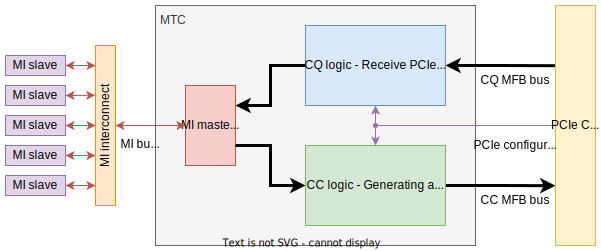

MTC (MI Transaction Controller)
- ENTITY MTC IS
The MI Transaction Controller (MTC) component serves as the MI master endpoint. It provides the conversion of PCIe read and write requests to MI requests. It processes the responses to MI requests and sends them to the host PC as PCIe completion transactions. If the MI slave does not respond to an MI read request, the MTC module will be stuck, the PCIe communication will be broken and the guest PC may get into an unexpected state.
Simple block diagram including wiring:
 Generics
PortsGeneric
Type
Default
Description
MFB_REGIONS
natural
2
MFB bus: number of regions in word
MFB_REGION_SIZE
natural
1
MFB bus: number of blocks in region, must be 1
MFB_BLOCK_SIZE
natural
8
MFB bus: number of items in block, must be 8
MFB_ITEM_WIDTH
natural
32
MFB bus: width of one item in bits, must be 32 (dword)
MFB_REGION_WIDTH
natural
MFB_REGION_SIZE*MFB_BLOCK_SIZE*MFB_ITEM_WIDTH
MFB bus: width of single data region in bits, auxiliary parameter, do not change value!
BAR0_BASE_ADDR
std_logic_vector(31 downto 0)
X”01000000”
BAR0 base address for PCIE->MI32 transalation
BAR1_BASE_ADDR
std_logic_vector(31 downto 0)
X”02000000”
BAR1 base address for PCIE->MI32 transalation
BAR2_BASE_ADDR
std_logic_vector(31 downto 0)
X”03000000”
BAR2 base address for PCIE->MI32 transalation
BAR3_BASE_ADDR
std_logic_vector(31 downto 0)
X”04000000”
BAR3 base address for PCIE->MI32 transalation
BAR4_BASE_ADDR
std_logic_vector(31 downto 0)
X”05000000”
BAR4 base address for PCIE->MI32 transalation
BAR5_BASE_ADDR
std_logic_vector(31 downto 0)
X”06000000”
BAR5 base address for PCIE->MI32 transalation
EXP_ROM_BASE_ADDR
std_logic_vector(31 downto 0)
X”0A000000”
Expansion ROM base address for PCIE->MI32 transalation
CC_PIPE
boolean
true
Enable Pipe component on CC interface
CQ_PIPE
boolean
true
Enable Pipe component on CQ interface
MI_PIPE
boolean
true
Enable Pipe component on MI32 interface
MI_DATA_WIDTH
natural
32
MI bus: width of data word in bits, must be 32.
MI_ADDR_WIDTH
natural
32
MI bus: width of address word in bits, must be 32.
DEVICE
string
“ULTRASCALE”
Select correct FPGA device: “ULTRASCALE”, “STRATIX10”, “AGILEX”
ENDPOINT_TYPE
string
“USP”
Intel PCIe endpoint type:
Port
Type
Mode
Description
CLK
std_logic
in
Clock signal for the whole MTC module. Must be used clock from PCIe Hard IP!
RESET
std_logic
in
Reset synchronized with CLK.
=====
Configuration Status Interface
=====
=====
CTL_MAX_PAYLOAD_SIZE
std_logic_vector(2 downto 0)
in
Maximum allowed size of completion payload: 000b = 128 bytes; 001b = 256 bytes; 010b = 512 bytes; 011b = 1024 bytes
CTL_BAR_APERTURE
std_logic_vector(5 downto 0)
in
BAR aperture value (Intel FPGA only). Defines the size of the address space of BAR in the number of usable address bits.
=====
MFB Completer Request (CQ) Interface
=====
=====
CQ_MFB_DATA
std_logic_vector(MFB_REGIONS*MFB_REGION_WIDTH-1 downto 0)
in
CQ_MFB_META
std_logic_vector(MFB_REGIONS*PCIE_CQ_META_WIDTH-1 downto 0)
in
CQ_MFB_SOF
std_logic_vector(MFB_REGIONS-1 downto 0)
in
CQ_MFB_EOF
std_logic_vector(MFB_REGIONS-1 downto 0)
in
CQ_MFB_SOF_POS
std_logic_vector(MFB_REGIONS*max(1,log2(MFB_REGION_SIZE))-1 downto 0)
in
CQ_MFB_EOF_POS
std_logic_vector(MFB_REGIONS*max(1,log2(MFB_REGION_SIZE*MFB_BLOCK_SIZE))-1 downto 0)
in
CQ_MFB_SRC_RDY
std_logic
in
CQ_MFB_DST_RDY
std_logic
out
=====
MFB Completer Completion (CC) Interface
=====
=====
CC_MFB_DATA
std_logic_vector(MFB_REGIONS*MFB_REGION_WIDTH-1 downto 0)
out
CC_MFB_META
std_logic_vector(MFB_REGIONS*PCIE_CC_META_WIDTH-1 downto 0)
out
CC_MFB_SOF
std_logic_vector(MFB_REGIONS-1 downto 0)
out
CC_MFB_EOF
std_logic_vector(MFB_REGIONS-1 downto 0)
out
CC_MFB_SOF_POS
std_logic_vector(MFB_REGIONS*max(1,log2(MFB_REGION_SIZE))-1 downto 0)
out
CC_MFB_EOF_POS
std_logic_vector(MFB_REGIONS*max(1,log2(MFB_REGION_SIZE*MFB_BLOCK_SIZE))-1 downto 0)
out
CC_MFB_SRC_RDY
std_logic
out
CC_MFB_DST_RDY
std_logic
in
=====
MI32 interface (master)
=====
=====
MI_FUNCTION
std_logic_vector(7 downto 0)
out
MI bus: PCIe function number that generated the current MI request
MI_DWR
std_logic_vector(31 downto 0)
out
MI bus: data from master to slave (write data)
MI_ADDR
std_logic_vector(31 downto 0)
out
MI bus: slave address
MI_BE
std_logic_vector(3 downto 0)
out
MI bus: byte enable
MI_RD
std_logic
out
MI bus: read request
MI_WR
std_logic
out
MI bus: write request
MI_ARDY
std_logic
in
MI bus: ready of slave module
MI_DRD
std_logic_vector(31 downto 0)
in
MI bus: data from slave to master (read data)
MI_DRDY
std_logic
in
MI bus: valid of MI_DRD data signal
{kind=link}